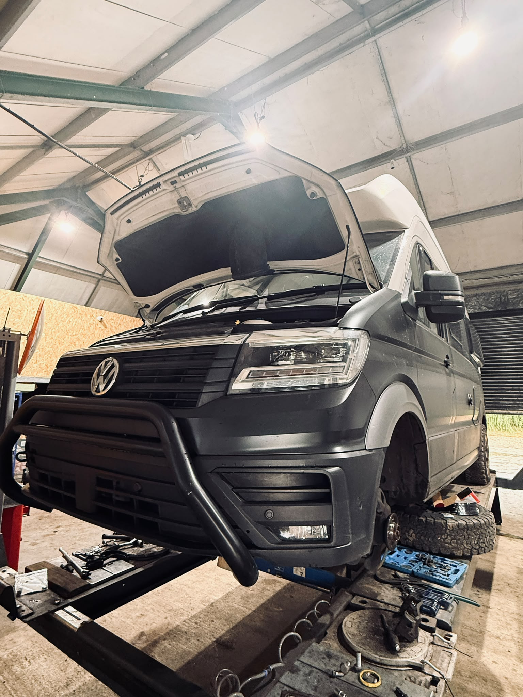

VW Grand California TDI Brake Overhaul & Side Step Upgrade
This VW Grand California TDI came into our workshop for a brake system inspection and a practical upgrade. During our assessment, we found significant wear on the brake discs and pads, which had reached the point where replacement was necessary to maintain safe and effective braking performance.
The Fault
The vehicle arrived for inspection with brake components showing clear signs of wear. The discs and pads had reached a condition where replacement was required to restore safe braking performance.
Because this vehicle is a large camper conversion, reliable braking is especially important due to the vehicle weight and the type of long-distance use it is designed for.
The Risk
Ignoring worn brake components can have serious consequences. Excessively worn discs and pads can increase stopping distances, reduce braking performance and compromise safety for both the driver and other road users.
In severe cases, neglected brake wear can also lead to costly damage to other braking system components.
The Repair
Our technicians replaced the worn brake discs and pads, restoring the vehicle's braking efficiency and ensuring it was ready for many more miles of safe travel. We also fitted a set of side steps, making access to the vehicle easier and more convenient while improving its overall practicality.
- Brake system inspection carried out.
- Worn brake discs replaced.
- Brake pads replaced.
- Side steps fitted for easier access.
- Final safety checks completed before handover.
Photo Gallery
Click any photo to open it in a larger view.


{kind=link}
{kind=link}
{kind=link}
{kind=link}
The Result
Regular inspections and timely maintenance are essential for keeping your vehicle safe and reliable. Addressing wear before it becomes a major issue improves driving confidence and can help avoid more expensive repairs in the future.
After the brake replacement and side step installation, the vehicle was ready for safe, comfortable and practical use again.